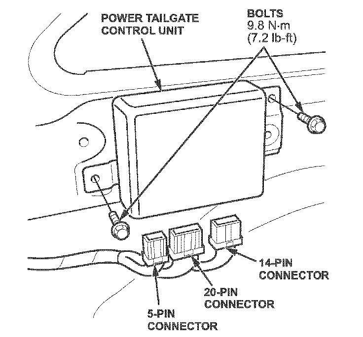

Electrical - Low/Dead Battery if Liftgate is Left Open
07-020April 27, 2007
Applies To:
2007 MDX With RES - From VIN 2HNYD28..7H500001 thru 2HNYD28..7H519033
Battery Is Low or Dead After Power Tailgate Is Left Open
SYMPTOM
If the power tailgate is left open for an extended period with the engine off, the battery may be low or dead.
PROBABLE CAUSE
The power tailgate control unit leaves the B-CAN on, drawing about 3 amps.
CORRECTIVE ACTION
Replace the power tailgate control unit.
PARTS INFORMATION
Power Tailgate Control Unit: P/N 74970-STX-A02
WARRANTY CLAIM INFORMATION
In warranty:
The normal warranty applies.
Operation Number: 8231K0
Flat Rate Time: 0.9 hour
Failed Part: P/N 74970-STX-AO1
Defect Code: 03217
Symptom Code: 07001
Template ID: 07-020A
Skill Level: Repair Technician
Out of warranty:
Any repair performed after warranty expiration may be eligible for goodwill consideration by the District Parts and Service Manager or your Zone Office. You must request consideration, and get a decision, before starting work.
REPAIR PROCEDURE
1. Make sure you have the anti-theft codes for the audio system and navigation system (if equipped). Open the tailgate, then disconnect the negative cable from the battery.
2. Remove the left rear side trim panel:
^ Refer to page 20-92 of the 2007 MDX Service Manual (Volume 2), or
^ Online, enter keyword TRIM REAR and select Interior Trim Removal/Installation - Rear Side Area from the list.

3. Disconnect the three connectors from the power tailgate control unit.
4. Remove the bolts from the power tailgate control unit.
5. Install the new power tailgate control unit, and reconnect the connectors.
6. Install the left rear side trim panel in the reverse order of removal.
7. Reset the power tailgate control unit:
^ Reconnect the negative cable to the battery.
^ Close the tailgate.
^ Use the keyless remote to make sure the power tailgate works properly.
8. Enter the anti-theft codes for the audio system and navigation system (if equipped).

Disclaimer